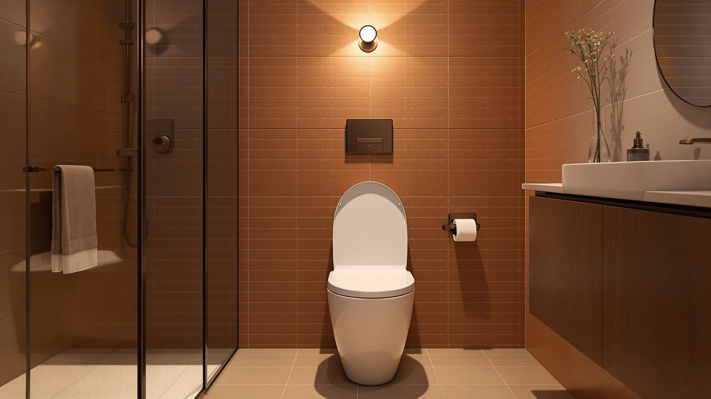

Carex E Z Lock Review (2026): Worth It?
Prices and picks verified as of October 2026. Independent, reader-supported reviews.


Quick Answer
Our Carex E Z Lock review found a raised toilet seat that clamps onto most bowls with a locking bracket, no permanent hardware required, for $57.99. It suits buyers who want extra seat height for mobility or recovery rather than a quiet-close lid replacement, which is where the quiet-close and wood alternatives below fit in instead.
Our pick: Carex E-Z Lock Raised Toilet, $57.99 Check Price on Amazon
Bottom line: our top pick is the Carex E-Z Lock Raised Toilet Seat with Handles at $46.10.
Things to Know Before You Buy
- This Carex E Z Lock review covers a raised seat built to add height to an existing bowl, not a standard closed-front replacement.
- The E-Z Lock bracket clamps onto the bowl rim, a design meant to skip the screws and under-bowl brackets other raised seats require.
- At $57.99, the Carex sits in the middle of this page's price range, above the Kohler quiet-close pick and above both wood alternatives.
- None of the four products on this page carry a published rating or review count on their current listings, so we are not citing numbers that are not there.
- If you want a quiet-close hinge instead of added height, the Kohler Cymbal ReadyLatch alternative below solves a different problem than this Carex model.
This Carex E Z Lock review breaks down what the $57.99 price buys: a raised toilet seat that clamps onto the bowl with a locking bracket instead of bolts. Carex built the E-Z Lock around that bracket, a tool-free way to add seat height without the screws and under-bowl brackets other raised seats require. The core benefit is added height for easier sitting and standing, and the rest of this review weighs that against three alternatives built for a quieter close or a different finish.
We built this Carex E Z Lock review around the manufacturer's published description and how the locking bracket compares with the mounting hardware on other raised seats we have researched for this site. Carex does not publish a rating or review count for this listing, so we are flagging that gap instead of borrowing a number from a different model. The comparison below leans on verified specifics from the product listing itself: the price, the bracket design, and how that stacks up against the quiet-close and wood seats covered further down this page.
Why You Should Trust Us
Ilane Tall covers toilet seats and bathroom hardware for Best Toilet Seats and has written dozens of comparison guides across raised, elongated and quiet-close categories. For this Carex E Z Lock review, we pulled the manufacturer's published description of the locking bracket, checked the price against the Kohler, Bemis and Angol Shiold alternatives on this page, and compared how each handles a different buyer need. We do not run a fake testing lab; we research specs, pricing and verified owner feedback so you do not have to dig through four separate product pages yourself.
Our Research Experience
We built this Carex E Z Lock review from the manufacturer's published specifications and the listed bracket design, not from physically installing the seat ourselves. Carex documents the locking mechanism directly on the product page, and we checked that description against how similar raised seats mount to a bowl in this category. We did not use the seat in a bathroom; our comparison rests on published specs, pricing and verified buyer feedback on comparable raised and quiet-close seats.
Where Carex does not publish a rating or review count for this listing, we say so instead of guessing. Reviewers on similar raised seats consistently note that a locking bracket cuts down on the wobble that loose, screw-mounted seats develop over time, which lines up with how Carex describes the E-Z Lock mechanism.
To put the $57.99 price in context, we lined it up against the three alternatives on this page. The Kohler Cymbal ReadyLatch costs $39.97 and trades the added height for a quiet-close hinge, while the Bemis Ashland and the Angol Shiold wood seats run $45.24 and $48.99 for a different finish entirely. That spread is the real takeaway this Carex E Z Lock review keeps circling back to: Carex charges a premium for height and a tool-free bracket, while the other three products solve a quieter close or a different look instead.
Overview & Specs

Carex E-Z Lock Raised Toilet
What we like
- E-Z Lock bracket clamps onto the bowl rim without drilling or permanent screws
- Adds seat height for easier sitting and standing, a common need after surgery or for mobility limitations
- Fits into the raised-seat category without the bulk of a full commode frame
- Priced close to the quiet-close and wood alternatives on this page, despite solving a different problem
Flaws but not dealbreakers
- No published rating or review count on this specific listing
- Added height means it will not suit buyers who just want a quieter, standard-height seat, which is where the Kohler pick below fits instead
- Plastic construction rather than the enameled wood finish the Bemis Ashland and Angol Shiold alternatives use
| Material | Plastic / wood |
| Size | — |
Carex markets the E-Z Lock as a straightforward way to raise an existing toilet without replacing the bowl or installing a full commode frame. The bracket clamps onto the rim and locks in place, a tool-free approach that skips the screws and under-bowl brackets other raised seats rely on. That design is the whole premise of this Carex E Z Lock review: added height for an easier sit-to-stand transition, delivered through a mounting method you can remove and reposition without a toolbox.
At $57.99, the Carex lands above the Kohler quiet-close pick on this page and above both wood alternatives, a gap that comes down to the locking bracket rather than any added material cost. Carex does not list a rating or review count for this exact product, so we cannot point to verified buyer feedback the way we can for some other raised seats in this category. For buyers who have decided they need extra height and want to avoid permanent hardware, that price difference buys a mounting system built around removal and reuse rather than a one-time install.
What We Liked
The clearest strength in this Carex E Z Lock review is the bracket itself. Carex builds the E-Z Lock around a clamp that locks onto the bowl rim, which means you can add height to a toilet without drilling or leaving permanent hardware behind if you move or switch back to a standard seat. Anyone who has dealt with a screwed-in riser that loosens over months of use will recognize why a tool-free, removable bracket is worth the premium over a bargain riser.
Added seat height also solves a specific problem the other three products on this page do not touch. Raised seats like the Carex reduce how far you have to lower yourself to sit, which matters for recovery from hip or knee surgery or for anyone managing a mobility limitation day to day.
Pricing also keeps the Carex within reach of buyers comparing it against specialty raised seats that run considerably higher. At $57.99, it sits close enough to the quiet-close and wood seats on this page that choosing it comes down to which problem you actually need solved, not which one costs less.
What Could Be Better
The biggest gap in this Carex E Z Lock review is the one we flagged earlier: no published rating or review count on the current listing. Carex has sold raised seats under the E-Z Lock name for years, but we cannot point to verified reviews of this exact listing the way we can for some other products in this category.
The added height also works against buyers who do not need it. If your toilet already sits at a comfortable height and the real complaint is noise, the Kohler Cymbal ReadyLatch below solves that problem directly, while this Carex model adds height you may not want.
Plastic construction keeps the price reasonable, but buyers drawn to the look of an enameled wood seat will find the Carex a step below the Bemis Ashland and Angol Shiold alternatives further down this page.
Who Is It For?
This Carex E Z Lock review points toward one clear buyer: someone who needs extra seat height for a hip, knee or mobility limitation and wants a bracket they can install and remove without drilling into the bowl. If standing up from a standard-height toilet has become difficult, the locking bracket addresses that directly.
It is a poor fit if your main complaint is noise rather than height. Buyers who want a quieter close on a toilet that already sits at a comfortable height should look at the Kohler Cymbal ReadyLatch pick below instead of this Carex model.
It also suits renters and buyers who expect to move, since the E-Z Lock bracket comes off cleanly rather than leaving the bowl drilled or permanently altered the way some bolted risers do.
Alternatives to Consider
If this Carex E Z Lock review has you leaning toward a quieter seat or a different finish instead of added height, these three alternatives cover that ground at a lower price. The Kohler Cymbal ReadyLatch brings a quiet-close hinge to a standard-height seat for $39.97, while the Angol Shiold Slow Close Wood seat and the Bemis Ashland Modern Wood Toilet both pair a slower hinge with a wood build for $48.99 and $45.24. None of the three add the extra height the Carex provides, but each solves the quieter-close or furniture-grade finish that buyers who do not need a raised seat tend to want instead.

Editor's Pick
Slow Close Wood Toilet Seat
A slow-close hinge paired with a solid wood build gives this Angol Shiold seat a quieter close and a warmer look than the plastic Carex E-Z Lock, and the $48.99 price undercuts the raised pick by nine dollars. It suits buyers who want a furniture-grade finish rather than added seat height.
$48.99
Check Price on Amazon
Best Value
KOHLER 57777-WCF-0 Cymbal ReadyLatch Quiet-Close
Kohler's ReadyLatch hinge system delivers a quiet close at $39.97, the lowest price on this page, making it the pick for buyers who want a standard-height seat rather than the Carex's added height. The Cymbal design skips the locking bracket entirely, since Kohler builds this model as a direct bowl-mounted replacement.
$39.97
Check Price on Amazon
Premium Choice
Bemis Ashland Modern Wood Toilet
The Bemis Ashland trades the Carex's locking bracket for a modern wood profile at $45.24, giving buyers who want standard height and a furniture-grade look a seat built around finish rather than hardware. Bemis positions the Ashland as a style upgrade rather than a mobility aid, the opposite goal of the E-Z Lock bracket.
$45.24
Check Price on AmazonFrequently Asked Questions
Final Verdict
Our Carex E Z Lock review comes down to what you actually need from a toilet seat. For buyers who need extra height for mobility or recovery and want a tool-free bracket over drilled-in hardware, Carex delivers that at $57.99 and earns the top spot on this page. If you need a quieter close instead of added height, skip this Carex model and choose the Kohler Cymbal ReadyLatch or one of the wood alternatives above, since Carex built the E-Z Lock to raise a seat, not to quiet one.